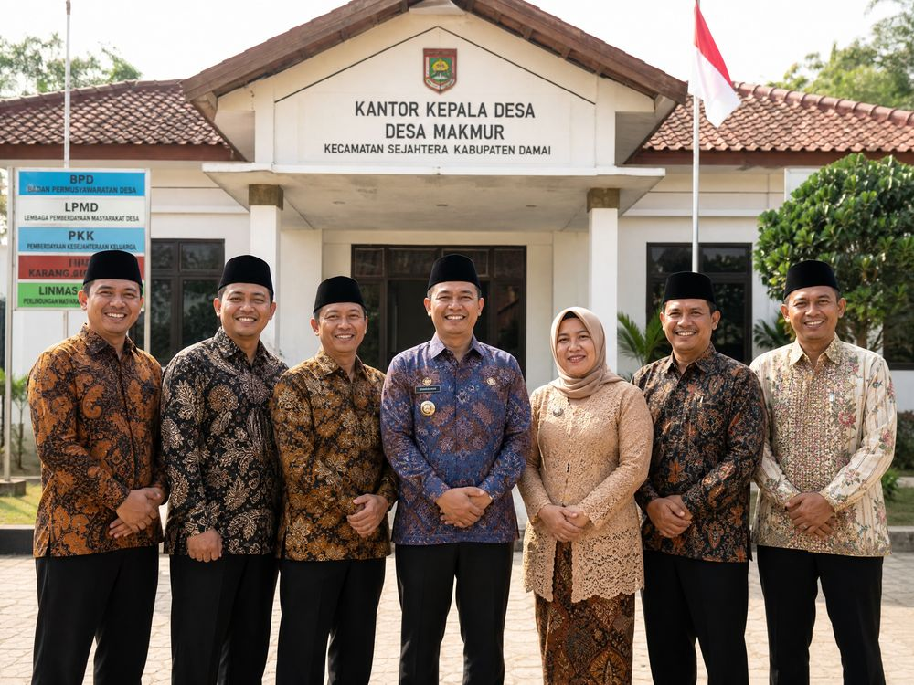

Jelajahi Keindahan Di Desa Kentengsari
Rasakan kesejukan udara dan panorama menakjubkan lereng Gunung Sumbing yang menjadikan desa kami begitu istimewa.
Jelajahi
Kata Sambutan
Selamat Datang Di Desa Kentengsari
Assalamu'alaikum Warahmatullahi Wabarakatuh,
Selamat datang di website resmi Desa Kentengsari, Kecamatan Windusari, Kabupaten Magelang. Desa Kentengsari merupakan desa terkecil di Kecamatan Windusari, namun memiliki kekayaan alam yang luar biasa. Berada di ketinggian 750 mdpl di lereng Gunung Sumbing, tanah kami yang subur memungkinkan masyarakat untuk bertani padi, tembakau, sayuran, dan berbagai komoditas pertanian lainnya.
Website ini kami hadirkan sebagai media informasi dan komunikasi bagi warga desa maupun masyarakat luar. Kami berharap melalui platform ini, kearifan lokal, suasana asri, dan semangat gotong royong masyarakat Desa Kentengsari dapat lebih dikenal luas.
Terima kasih atas kunjungan Anda.
— Kepala Desa Kentengsari


Berita Terkini
Kabar & Kegiatan Desa
Ikuti perkembangan terbaru seputar kegiatan, pembangunan, dan kehidupan masyarakat Desa Kentengsari.
Belum Ada Berita
Informasi dan berita seputar kegiatan Desa Kentengsari akan segera hadir di halaman ini.
Profil Desa
Mengenal Desa Kentengsari
Desa Kentengsari adalah sebuah desa di Kecamatan Windusari, Kabupaten Magelang, Jawa Tengah, Indonesia. Nama desa ini merupakan penggabungan dari dua nama desa pendahulunya, yaitu Desa Kenteng dan Desa Sari. Desa Kentengsari berjarak sekitar 2,5 Km dari ibu kota kecamatan dan 29 Km dari ibu kota kabupaten melalui Bandongan.
Wilayah desa berada di lereng Gunung Sumbing dengan ketinggian 750 mdpl, menjadikan udaranya sejuk dengan tanah yang subur. Mayoritas penduduknya bermata pencaharian sebagai petani — memanfaatkan tanah yang subur untuk menanam padi, tembakau, sayuran, dan berbagai komoditas pertanian lainnya.
Desa ini terdiri dari lima dusun: Krajan 1, Krajan 2, Krajan 3, Kenteng Wetan, dan Nglarangan, dengan penduduk yang dikenal guyub rukun dan menjunjung tinggi gotong royong.
Selengkapnya
750
Meter di atas permukaan laut
309
Jiwa
Total penduduk (2025)
92
Kepala Keluarga
Tersebar di seluruh dusun
5
Dusun
Krajan 1–3, Kenteng Wetan, Nglarangan
8
RT / 2 RW
Wilayah administrasi
Destinasi
Jelajahi Keindahan Alam Desa
Nikmati panorama lereng Gunung Sumbing, hamparan sawah yang hijau, dan udara pegunungan yang menyegarkan.